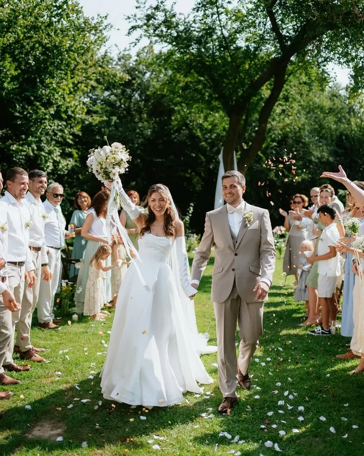
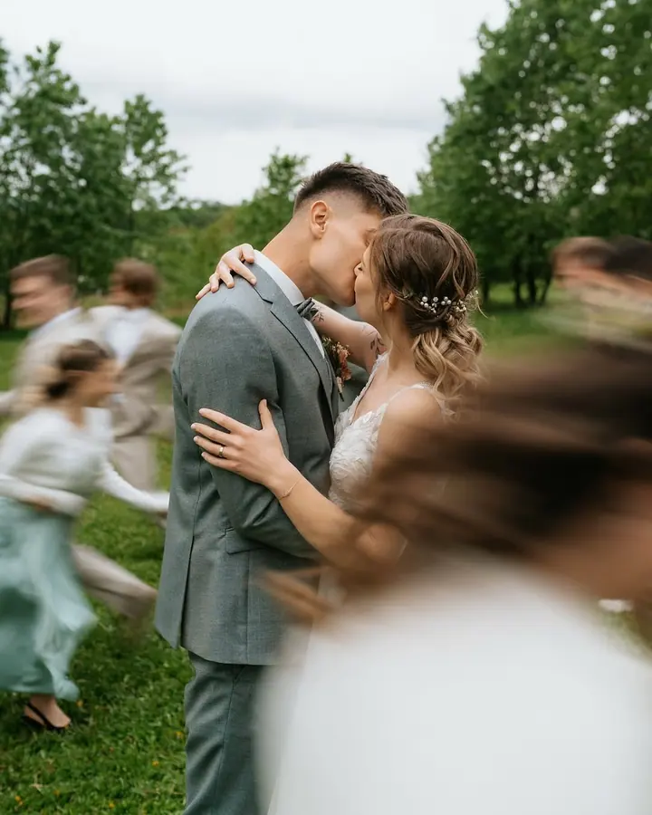
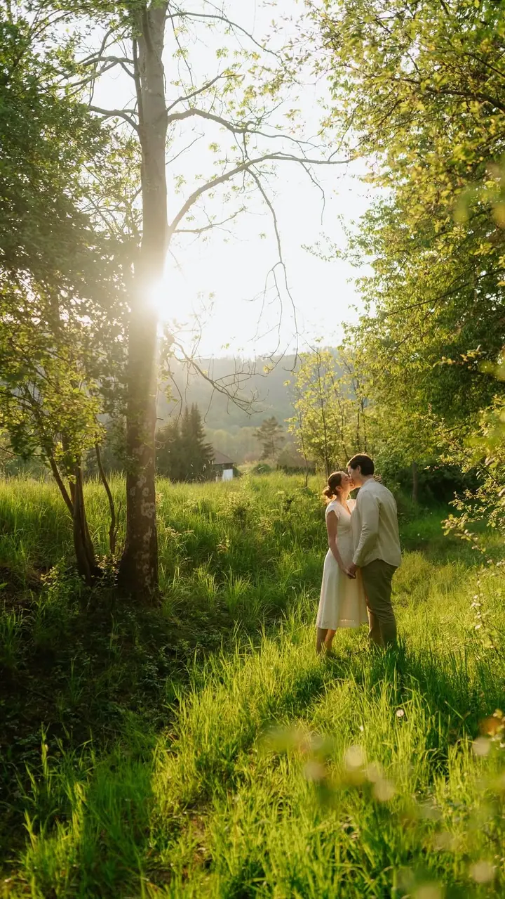
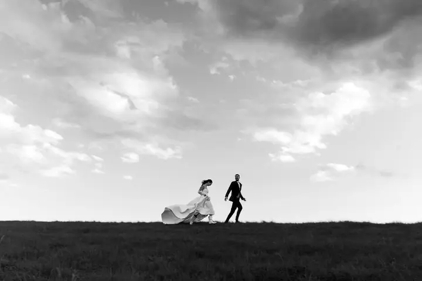
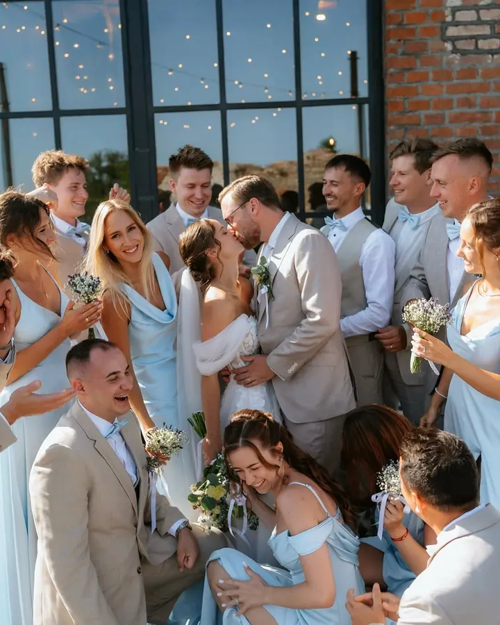

jedna
Svatby
Na svatby se specializuji a fotím je po celém Česku i v zahraničí. Spojuji důraz na krásu a detaily s momenty, které chytí za srdce a už se nebudou opakovat.

Svatební a portrétní fotografka · Boskovice, Brno, Blansko

Jmenuji se Veronika Sýkorová, jsem svatební fotografka z Boskovic a kromě svateb ráda fotím páry, ženy i celé rodiny. Ve fotkách hledám pohodu, upřímnost a reálné barvy, aby se vám líbily dnes, zítra i za spoustu let.
Více o mně
Co fotím
jedna
Na svatby se specializuji a fotím je po celém Česku i v zahraničí. Spojuji důraz na krásu a detaily s momenty, které chytí za srdce a už se nebudou opakovat.
dvě
Předsvatební, zásnubní i jen tak párové focení v přírodě. Do focení vnáším pohodu a odlehčení, takže nervozita rychle zmizí.
tři
Focení venku nebo u vás doma, uvolněné a s humorem. K úsměvu umím namotivovat i ty nejmenší.
Portréty žen a těhotenské focení, vždy vkusně a s citem. Hledám ve fotkách upřímnost, uklidnění a vztah k přírodě.

Opravdově, nadčasově, s reálnými barvami.

Za objektivem
Kdo mě zná, řekne nejspíš, že jsem pozitivně naladěná a že když něco opravdu chci, vždycky najdu cestu. Věřím, že se moje já odráží v tom, co fotím, a proto ve fotkách hledám pohodu, upřímnost, humor, ale i uklidnění a vztah k přírodě. Jsem fanda moderní elegance, baví mě ale i retro, takže nakonec je jedno, co fotím. Jen to musí být pojaté vkusně a s citem.
Svatby fotím, protože mi to dává největší smysl. Vím, jak výjimečné je najít svou druhou polovinu, a každý pár, který to našel, je pro mě inspirací. Na focení se snažím být maximálně chápavá, vnáším do něj odlehčení a nejeden úsměv a potrpím si na dobrou organizaci, aby celá spolupráce proběhla hladce.
Mojí druhou velkou vášní je aktivní cestování, a samozřejmě při něm fotím. Jsem typický střelec s mindsetem „it is what it is“ a do věcí se nebojím jít po hlavě. Proto ráda vyrazím i na svatbu nebo zásnuby do zahraničí, sbaleno mívám dřív, než mi termín potvrdíte.
Veronika
Pošlete mi kontakt, termín, místo a co a koho budeme fotit. Všechno si jasně vysvětlíme dopředu.
Termín potvrdíte rezervačním poplatkem: 5 000 Kč u svatby, 500 Kč u portrétního focení. Zbytek se doplácí nejpozději v den focení.
Na focení vnáším klid a humor, takže se rychle uvolníte. Přizpůsobím se vám a vycítím, jak s vámi pracovat.
Po focení dostanete náhledy a vyberete si své favority. Hotové fotky máte nejpozději do 40 dní od výběru v online galerii.
Portfolio
Otázky
Moje základna jsou Boskovice, nejvíc proto fotím na Blanensku a v Brně. Dojedu ale po celém kraji i republice a svatby fotím po celém Česku i v zahraničí.
Pro svatební focení 5 000 Kč, pro všechny typy portrétního focení 500 Kč a pro ostatní focení individuálně.
Vždy elektronicky v online galerii, kde jsou minimálně 3 měsíce ke stažení a tisku. Fotky mají nejvyšší možné rozlišení ve formátu JPG.
Ano, tištěné fotky jsou pro mě nesrovnatelné s digitálními. U svateb jsou součástí balíčků, k ostatním focením si je můžete objednat z galerie, od malých fotek přes fotoknihy až po obrazy.
Napište pár vět o tom, co si představujete. filip.sedlacek1@centrum.cz